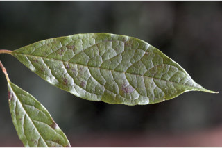
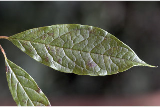
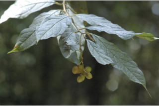
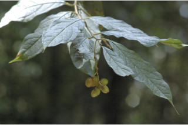

Large shrubs to small trees up to 4 m tall.
4 ಮೀ. ಎತ್ತರದವರೆಗಿನ ದೊಡ್ಡ ಗಾತ್ರದ ಪೊದೆಗಳು ಆಥವಾ ಸಣ್ಣ ಗಾತ್ರದ ಮರಗಳು.
Large shrubs to small trees up to 4 m tall.
பெரிய குத்துச்செடி முதல் சிறிய மரம் 4 மீ. உயரம் வரை வளரக்கூடியது.
Bark greysih-brown, lenticellate; blaze whitish-cream.
ತೊಗಟೆ ಬೂದು ಮಿಶ್ರಿತ ಕಂದು ಬಣ್ಣದಲ್ಲಿದ್ದು, ವಾಯುವಿನಿಮಯ ಬೆಂಡು ರಂಧ್ರಗಳ ಸಮೇತವಿರುತ್ತವೆ;ಕಚ್ಚು ಮಾಡಿದ ಜಾಗ ಬಿಳಿ ಮಿಶ್ರಿತ ಕೆನೆ ಬಣ್ಣದಲ್ಲಿರುತ್ತದೆ.
Bark greysih-brown, lenticellate; blaze whitish-cream.
மரத்தின் பட்டை சாம்பல்-ப்ரவுன் நிறமானது, பட்டைத்துளைகள் (லெண்டிசெல்லேட்) உடையது; உள்பட்டை வெள்ளை-கிரீம் நிறமானது.
Branchlets terete, pubescent when young.
ಕಿರುಕೊಂಬೆಗಳು ದುಂಡಾಗಿದ್ದು,ಮೃದು ತುಪ್ಪಳದಿಂದ ಕೂಡಿದ್ದು ವಾಯುವಿನಿಮಯ ಬೆಂಡು ರಂಧ್ರಗಳ ಸಮೇತವಿರುತ್ತವೆ.
Branchlets terete, pubescent when young.
சிறியநுனிக்கிளைகள் குறுக்குவெட்டுத் தோற்றத்தில் வளையமானது, உரோமங்களுடையது.
Leaves simple, alternate, spiral; petiole 0.7-1.3 cm long, canaliculate in cross section, tomentose; lamina 6.5-11 x 3-4.3 cm, elliptic, apex acuminate, base acute, margin entire, glabrous; nervation impressed above; midrib canaliculate above; secondary_nerves ca. 8 pairs; tertiary_nerves broadly reticulate.
ಎಲೆಗಳು ಸರಳವಾಗಿದ್ದು ಪರ್ಯಾಯ ಮತ್ತು ಸುತ್ತು ಜೋಡನಾ ವ್ಯವಸ್ಥೆಯಲ್ಲಿರುತ್ತವೆ; ತೊಟ್ಟುಗಳು 0.7 –1.3 ಸೆಂ.ಮೀ.ವರೆಗಿನ ಉದ್ದವಿದ್ದು,ಅಡ್ಡ ಸೀಳಿದಾಗ ಕಾಲುವೆಗೆರೆಯನ್ನು ಹೊಂದಿರುತ್ತದೆ ಹಾಗೂ ದಟ್ಟ ಮೃದು ತುಪ್ಪಳದಿಂದ ಕೂಡಿರುತ್ತವೆ; ಪತ್ರಗಳು 6. 5 -11 X 3–4 .3 ಸೆಂ.ಮೀ. ಗಾತ್ರ, ಅಂಡವೃತ್ತದ ಆಕಾರ, ಕ್ರಮೇಣ ಚೂಪಾಗುವ ಮಾದರಿಯ ತುದಿ, ಚೂಪಾದ ಬುಡ, ನಯವಾದ ಅಂಚನ್ನು ಹೊಂದಿದ್ದು ರೋಮರಹಿತವಾಗಿರುತ್ತವೆ;ನಾಳಗಳು ಪತ್ರಗಳ ಮೇಲ್ಭಾಗದಲ್ಲಿ ಅಚ್ಚೊತ್ತಿದಂತಿರುತ್ತವೆ;, ಮಧ್ಯನಾಳ ಪತ್ರದ ಮೇಲ್ಭಾಗದಲ್ಲಿ ಕಾಲುವೆ ಗೆರೆಯನ್ನು ಹೊಂದಿರುತ್ತದೆ;ಎರಡನೇ ದರ್ಜೆಯ ನಾಳಗಳು ಅಂದಾಜು 8 ಜೋಡಿಗಳಿರುತ್ತವೆ;ಮೂರನೇ ದರ್ಜೆಯ ನಾಳಗಳು ವಿಶಾಲ ಜಾಲಬಂಧ ನಾಳ ವಿನ್ಯಾಸದಲ್ಲಿರುತ್ತವೆ.
Leaves simple, alternate, spiral; petiole 0.7-1.3 cm long, canaliculate in cross section, tomentose; lamina 6.5-11 x 3-4.3 cm, elliptic, apex acuminate, base acute, margin entire, glabrous; nervation impressed above; midrib canaliculate above; secondary_nerves ca. 8 pairs; tertiary_nerves broadly reticulate.
இலைகள் தனித்தவை, மாற்றுஅடுக்கமானவை, சுழல் போன்று அமைந்தவை; இலைக்காம்பு 0.7-1.3 செ.மீ. நீளமானது, குறுக்குவெட்டுத் தோற்றத்தில் கேனாலிகுலேட், உரோமங்களுடையது; இலை அலகு 6.5-11 X 3-4.3 செ.மீ., நீள்வட்ட வடிவானது, அலகின் நுனி அதிக்கூரியது, அலகின் தளம் கூரியது, அலகின் விளிம்பு முழுமையானது, உரோமங்களற்றது; நரம்புகள் அலகின் பரப்பைவிட பள்ளமானது; மையநரம்பு மேற்புறத்தில் அலகின் பரப்பைவிட பள்ளமானது; இரண்டாம் நிலை நரம்புகள் 8 ஜோடிகள்; மூன்றாம் நிலை நரம்புகள் அகன்ற வலைப்பின்னல் போன்றவை.
Inflorescence racemes, to 15 cm long, pendulous; peduncle to 3 cm long; pedicel 0.8 cm long; flowers zygomorphic, yellow; petals 3, lower one boat shaped.
ಪುಷ್ಪಮಂಜರಿಗಳು ಮಧ್ಯಾಭಿಸರದ ಮಾದರಿಯವುಗಳಾಗಿದ್ದು 15 ಸೆಂ.ಮೀ. ಉದ್ದವಿದ್ದು ಲೋಲಾಡುತ್ತಿರುತ್ತವೆ;ವೃಂತ 3 ಸೆಂ.ಮೀ ವರೆಗಿನ ಉದ್ದವಿರುತ್ತವೆ;ಹೂ ತೊಟ್ಟು 0.8 ಸೆಂ.ಮೀ.ಉದ್ದವಿರುತ್ತವೆ;ಹೂಗಳು ಉಭಯ ಪಾರ್ಶ್ವ ಅಸಮಾಂಗತೆ ಹೊಂದಿರುತ್ತವೆ, ಹಾಗೂ ಹಳದಿ ಬಣ್ಣ ಹೊಂದಿರುತ್ತವೆ;ಪುಷ್ಪದಳಗಳು 3, ತಳಭಾಗದ ಒಂದು ದಳ ದೋಣಿಯಾಕಾರದಲ್ಲಿರುತ್ತದೆ.
Inflorescence racemes, to 15 cm long, pendulous; peduncle to 3 cm long; pedicel 0.8 cm long; flowers zygomorphic, yellow; petals 3, lower one boat shaped.
மஞ்சரி ரெசீம், முதல் 15 செ.மீ. நீளமானது, தெங்கியவை; மஞ்சரிக்காம்பு 3 செ.மீ. நீளமானது; மலர்காம்பு 0.8 செ.மீ. நீளமானது; மலர்கள் சமச்சீரற்ற மலர் (சைகோமார்பிக்), மஞ்சள் நிறமானவை; அல்லி இதழ்கள் 3, தளத்திலுள்ள இதழ் படகு போன்றது.
Capsule, obcordate, inflated; seeds 2, globose, compressed; carunlce orange-red.
ಸಂಪುಟ ಫಲ ತಲೆಕೆಳಗಾದ ಹೃದಯಾಕಾರದಲ್ಲಿದ್ದು, ಉಬ್ಬಿಕೊಂಡಿರುತ್ತದೆ;ಬೀಜಗಳು 2 ಇದ್ದು ಗೋಳಾಕಾರದಲ್ಲಿದ್ದು ಸಂಕುಚಿತಗೊಂಡಿರುತ್ತವೆ;ಕ್ಯಾರಂಕಲ್ ಕಿತ್ತಳೆ-ಕೆಂಪು ಬಣ್ಣದಲ್ಲಿರುತ್ತದೆ.
Capsule, obcordate, inflated; seeds 2, globose, compressed; carunlce orange-red.
வெடிகனி (கேப்சியூல்), தலைகீழ் இதய வடிவானது, உப்பியவை; விதைகள் 2, கோளவடிவானது, தட்டையானது; கேர்அங்கள் ஆரஞ்ச்-சிவப்பு நிறமானது.


 



 
